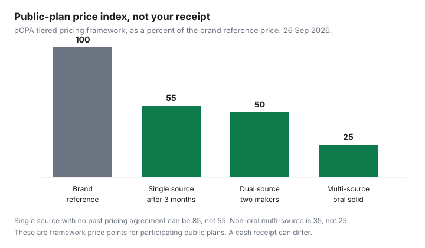

Healthcare · Canada
Generic vs Brand-Name Drugs in Canada: How Substitution Works and When to Ask for the Cheaper Option
A generic is not a discount code, and a brand is not a quality grade you can see from the logo. In Canada the price gap, when there is one, comes from how public plans price interchangeable products and from how your private plan treats a “no substitution” note. This page explains those mechanics. It is not medical advice, and it is not a reason to stop a medicine. Confirm interchangeability with the pharmacist in the province where you fill, and confirm what your plan pays by reading the adjudication.
Key takeaways
- Health Canada’s generic fact sheet requires bioequivalence to the Canadian reference product. The pharmacist is the person who can tell you whether the package in your hand is a generic.
- Ontario interchangeability is a Formulary designation under the Drug Interchangeability and Dispensing Fee Act. It is not a therapeutic switch to a different drug.
- The pan-Canadian tiered pricing framework sets public-plan generic price points as a percentage of the brand reference price: 85 or 75 then 55 for single source, 50 for two manufacturers, 25 for multi-source oral solids, and 35 for other multi-source forms.
- Those percentages are not a cash receipt. No molecule’s shelf price was opened for this draft, so no dollar saving is printed.
- Ontario Drug Benefit pays a higher-cost interchangeable product in medically necessary cases only after adverse reactions to two lower-cost products, with Health Canada forms. A workplace plan’s rule is in the booklet.
How Health Canada approves generics and what 'interchangeable' means provincially
Health Canada’s fact sheet on access to generic drugs, opened 26 Sep 2026, says a generic is made to act in the same way as the brand-name drug. The company must show the generic is bioequivalent: no significant difference in how quickly the medicinal ingredient is absorbed and achieves a level in the blood. When products are bioequivalent, the fact sheet says they should act the same way in the body and have the same safety and efficacy. The review checks pharmaceutical equivalence and bioequivalence. A generic’s notice of compliance lists a Canadian reference product, usually the brand, or another generic if the brand is no longer marketed. The same page says the easiest way to know if your drug is a generic is to ask your pharmacist, and that many plans limit payment for the brand once generics exist. Provincial or territorial law is what then lets a pharmacy give the generic even if you had been taking the brand.
Interchangeable is the provincial word, and it is narrower than “generic” in ordinary speech. Ontario’s Drug Interchangeability and Dispensing Fee Act lets the executive officer designate a product as interchangeable with another product in the Formulary. The Act’s opening rule is that there is no therapeutic substitution: the officer does not designate a product as interchangeable when it is a different drug. If a prescription names a specific interchangeable product, the dispenser may dispense another product designated as interchangeable with it. If the prescription names a product that is not itself designated, and an interchangeable product contains the same amounts of the same active ingredients in the same dosage form, the dispenser may dispense the interchangeable product. If the prescription does not name a specific product and interchangeable products exist, the dispenser shall dispense an interchangeable product. Those “may” and “shall” lines stop when the prescription carries a no-substitution direction.
That is Ontario. British Columbia, Alberta, Quebec, and the other provinces each publish their own formulary and substitution rules. Do not carry an Ontario Formulary note into a Vancouver pharmacy and treat it as law. Ask, “Is this product designated interchangeable here, and may you dispense it on this prescription?” The national pharmacare “who is covered” page on canada.ca did not return when it was requested on 26 Sep 2026, so this draft does not describe who that program covers. Use the provincial plan you actually have. Ontario’s coverage page is the one linked from the benefits-before-65 guide for the senior drug plan that starts the month after a 65th birthday.
Why generic prices in Canada are set via pCPA agreements
There is no Canadian equivalent of a pharmacy coupon that resets a brand price at the counter. Public plans negotiate generic prices together through the pan-Canadian Pharmaceutical Alliance. The tiered pricing framework page describes a price built from the brand reference price and the number of manufacturers. It is a public-plan framework. The pCPA’s own wording is that the system is meant to produce savings for people with public coverage, private coverage, or who pay out of pocket, because the prices are transparent and consistent. A private receipt can still differ. Do not subtract 75 percent from last month’s brand total and call it your refund.
The framework, opened 26 Sep 2026, sets these price points. A single-source generic is 85 percent of the brand reference price when no product-listing or pricing agreement for the brand exists or ever existed. If such an agreement exists or existed, the market-entry price is 75 percent, and it reduces automatically to 55 percent after three months of funding in that jurisdiction. If a second manufacturer arrives before the three months end, dual-source or multi-source rules apply when that product is available. Two manufacturers: 50 percent of the brand reference price. Three or more: 25 percent for oral solids, and 35 percent for other dosage forms such as liquids, patches, injectables, and inhalers. As of 1 October 2023, new categories use Ontario’s brand reference price, with exceptions the framework page spells out for Quebec and some older categories.
Ontario’s Executive Officer notice of 30 November 2023 says the same dates for the Ontario Drug Benefit Formulary: effective 1 October 2023, a new single-source generic’s drug benefit price is 75 percent of the brand reference price at listing, then 55 percent after about three monthly formulary updates, if it is still single source. A generic of a newly genericized molecule listed as off-formulary interchangeable and funded through the Exceptional Access Program is also subject to the framework, and only products that comply can be designated interchangeable and funded under that program. The chart draws 100, 55, 50, and 25. It leaves 85 and 35 in the caption because they are real tiers with a condition, not the bar for every drug.
'No substitution' prescriptions and when your plan charges the difference
A prescriber can write “no substitution” or “no sub,” and a dispenser can record that direction. In Ontario that direction blocks the substitution sections of the Act. It does not, by itself, make a public plan pay the higher price. The Ontario Drug Benefit Formulary, edition 43, states that the ministry reimburses a higher-cost interchangeable product in medically necessary circumstances where the person has had an adverse reaction to two lower-cost interchangeable products, where those products are available. The prescriber writes the no-substitution direction and completes a Health Canada adverse drug reaction form for each lower-cost product tried. The pharmacist keeps that documentation. If it is missing, reimbursement falls back to the lowest drug benefit price in the interchangeable category, and the difference can be recovered. An older “no substitution” that was already valid before 1 January 2015 can continue on renewal when the documentation remains on file. The minor-ailment questions-and-answers document updated 1 July 2026 says the same two-product rule applies when a pharmacist prescribes for a minor ailment for an Ontario Drug Benefit recipient.
A workplace plan is a contract, not the Ontario regulation. The usual pattern, described in the workplace drug guide, is that the plan pays its percentage of the allowed cost, and a brand spread sits outside that percentage. Your share is the gap between the product you received and the product the plan priced, plus any coinsurance on the allowed amount. Ask the pharmacist which line was unpaid. If a second plan exists, the coordination guide is the order of payment. The second plan does not automatically adopt the first plan’s generic price. If you are paying cash because a plan maximum is exhausted, a private gap policy is a different product. The gap-insurance guide is where that decision lives. Do not buy a rider to avoid a substitution conversation you have not had.
Biosimilar switching policies (BC, Ontario and others)
A biosimilar is not a tablet generic. It is a biologic medicine approved in relation to an originator biologic. Switching is a coverage policy: after a transition window, the public plan pays the biosimilar, and the originator is paid only if an exception is in place. You still need a prescription for the product the plan will fund. This is not a counter swap you should improvise.
British Columbia’s Biosimilars Initiative page says that once PharmaCare covers a Health Canada-approved biosimilar, patients have six months to move from the originator if they want to keep PharmaCare coverage. After the switch period, PharmaCare covers the biosimilar version. The prescriber writes a new prescription during that window. A person who cannot switch for a medical reason can have the prescriber submit a Special Authority request, considered case by case. The patient information sheet says that in the first five years after the initiative launched in 2019, British Columbia saved $732 million, and that more than 40,000 residents had switched. Those figures are the province’s, not a personal refund. Coverage for a specific insulin or infusion drug can have its own exception. Read the current list before you assume your originator is still paid.
Ontario’s biosimilars page says that on 31 March 2023, Ontario Drug Benefit recipients on selected originators began to transition within defined periods. Later notices added more drugs. The 20 November 2025 Executive Officer notice added Eylea (aflibercept), Actemra (tocilizumab), and Xolair (omalizumab), with a transition that began 28 November 2025 and ended 28 May 2026 for Eylea, and for Actemra and Xolair the earlier of 28 May 2026 or the expiry of an existing Exceptional Access Program approval. New starts are covered on the biosimilar when they meet the limited-use criteria. Because 28 May 2026 is already past, do not treat the originator as funded unless the Ontario page or your approval says an exception applies. Other provinces have their own lists. If yours is not British Columbia or Ontario, open that province’s drug-plan page rather than copying either policy. The pharmacist can tell you whether the prescription in hand is the product the public plan will pay today.
Questions to ask at the counter
Read these before you nod at a brand price. None of them asks the pharmacist to change your diagnosis.
- Is there a product designated interchangeable with this prescription in this province?
- If I take the interchangeable product, what is the drug cost, the markup, and the dispensing fee? The dispensing-fee guide is why those are three numbers.
- If I stay on the brand, what will the plan allow, and what is my share? Please show the adjudication, not a verbal “it should be covered.”
- Does “no substitution” on this prescription meet the public plan’s medical rule, or only my private plan’s rule?
- If this is a biologic, is a biosimilar transition already in force for my plan, and who writes the new prescription?
If the answer is that a different drug in the same class would be cheaper, stop and talk to the prescriber. Therapeutic substitution is a different decision from interchangeability. A minor-ailment assessment, where a pharmacist can prescribe for a listed condition, is also a different visit. Do not use a generic question to restart a prescription that has run out.
Real savings examples (date-stamped)
The dated examples this draft can stand behind are the framework percentages, not a shopping-bag total. No pharmacy flyer opened on 26 Sep 2026 with a brand price and a generic price for the same drug identification number. Inventing “brand $100, generic $25” would pretend a receipt existed. The table is the example. The bars are the same price points, drawn as an index with the brand at 100.
| Term | What it means | Who decides | Cost effect | Source |
|---|---|---|---|---|
| Generic | A drug shown to be bioequivalent to the Canadian reference product. | Health Canada authorizes it. The pharmacist identifies the package. | No dollar saving is stated here. Approval is not a price. | Health Canada generic-drug fact sheet, opened 26 Sep 2026. |
| Interchangeable | A Formulary designation that lets a pharmacist dispense a designated alternative of the same drug, strength, and form. | In Ontario, the executive officer. Other provinces use their own lists. | The plan can price the claim at the interchangeable product it allows. | Ontario Drug Interchangeability and Dispensing Fee Act. |
| Biosimilar | A biologic version of an originator. Coverage may move after a transition period. | Health Canada approves the product. The public plan sets the funding rule. The prescriber writes the prescription. | After the window, the originator may not be paid. British Columbia reported $732 million saved in the first five years of its initiative, and more than 40,000 residents switched. That is not your receipt. | BC PharmaCare Biosimilars Initiative and patient sheet; Ontario biosimilars page and the 20 November 2025 notice. |
| No substitution | A direction not to substitute. On the Ontario Drug Benefit, payment of the higher-cost product needs an adverse reaction to two lower-cost interchangeable products, with forms. | The prescriber writes it. The plan decides what it will reimburse. | Without the plan’s rule being met, you can pay the difference between the higher-cost product and the allowed price. | Ontario Drug Benefit Formulary, edition 43. Workplace plans: your booklet. |

Sources & date stamps
- Health Canada, access to generic drugs fact sheet, opened 26 Sep 2026. Bioequivalence, same expected safety and efficacy, pharmacist as the way to identify a generic, and plan rules that limit brand payment.
- Drug Interchangeability and Dispensing Fee Act, R.S.O. 1990, c. P.23, opened 26 Sep 2026. No therapeutic substitution. Interchangeable designation and the substitution sections, including the no-substitution exception.
- pCPA tiered pricing framework, opened 26 Sep 2026. Price points 85, 75 then 55, 50, 25, and 35, as described above. Ontario Executive Officer notice, 30 November 2023, effective 1 October 2023, for the 75 then 55 single-source rule on the Formulary.
- Ontario Drug Benefit Formulary edition 43, medically necessary no-substitution section: two lower-cost products and Health Canada adverse-reaction forms.
- British Columbia Biosimilars Initiative patient page and information sheet: six-month switch, then biosimilar coverage; $732 million and more than 40,000 residents in the first five years. Ontario biosimilars page and Executive Officer notice of 20 November 2025 for Eylea, Actemra, and Xolair, transition ending 28 May 2026.
- Dropped: any household dollar saving, because no brand-versus-generic shelf price was opened. The national pharmacare who-is-covered page returned an error on 26 Sep 2026 and is not summarized.
Frequently asked questions
Are generic drugs as effective as brand names in Canada?
Health Canada’s generic-drug fact sheet says a company must show its generic is bioequivalent to the brand, meaning no significant difference in how quickly the medicinal ingredient is absorbed and reaches a level in the blood. When products are bioequivalent, Health Canada says they should act the same way in the body and have the same safety and efficacy. That is an approval standard, not a promise about your dose. If a medicine feels different, the person to ask is your prescriber or pharmacist, not a coupon site.
What does 'interchangeable' mean?
In Ontario, interchangeable is a designation the executive officer makes in the Formulary under the Drug Interchangeability and Dispensing Fee Act. It is not the same word as generic, and it is not therapeutic substitution, which that Act does not authorize. A pharmacist may dispense another designated interchangeable product unless the prescription says not to, and other provinces use their own formularies. Ask which rule applies where you fill.
Why would my plan charge me the price difference?
Many plans reimburse the price of the interchangeable product they allow, and leave the rest with you if the prescription or your request keeps the higher-cost product. On the Ontario Drug Benefit, a higher-cost interchangeable product is reimbursed in medically necessary cases when the person has had an adverse reaction to two lower-cost interchangeable products, with a completed Health Canada adverse-reaction form for each. A workplace booklet can be stricter or looser. Read the adjudication before you assume the percentage applies to the brand price.
What is biosimilar switching?
A biosimilar is a biologic drug that Health Canada has approved as a version of an originator biologic. Public plans in British Columbia and Ontario have moved coverage from selected originators to biosimilars after a transition period, with a medical exception path. It is not the same process as swapping a tablet generic at the counter. Your prescriber writes the biosimilar prescription, and you should confirm the current drug list on the provincial page because transition end dates have already passed for several molecules.
How do I ask my pharmacist for the cheaper option?
Ask whether an interchangeable product is designated for this prescription, what the plan will pay, and what you would pay if you stay on the brand, with the drug cost and the dispensing fee as separate lines. Do not ask the pharmacist to change you to a different drug in the same class; that is a prescriber decision. The questions are on this page so you can read them at the counter.